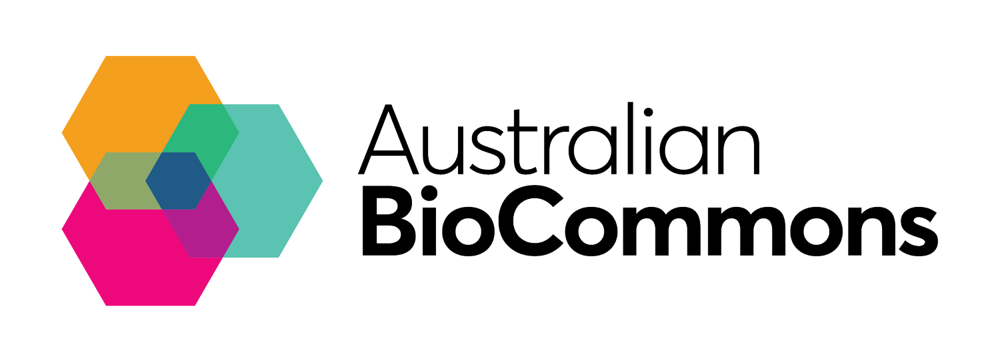

Nextflow Tower Service User Guide

Nextflow Tower is a full-stack solution for the management of Nextflow pipeline executions. It’s designed as an intuitive, user-friendly interface that allows you to control and monitor your data analysis pipelines. It simplifies running complex workflows, like those provided by nf-core, on different computation infrastructures such as HPC clusters, cloud services, or Kubernetes.
The Tower service is offered in two ways; a free basic account that can be used by individuals and a licensed service that is suitable for large organisations with multiple collaborators that require more complex user management. The Australian BioCommons Nextflow Tower service is licensed and provides a centralised command-post for running Nextflow pipelines as a subsidised service for Australian researchers.
Resources
Getting started
Nextflow Tower provides a centralised interface for managing users, compute environments, and workflows within defined spaces called workspaces. These workspaces are provided by the Australian BioCommons to use cases for the pilot program of the Australian BioCommons Nextflow Tower service. Therefore, the Australian BioCommons service team has insight into and administrative control over workspaces. However, workspace management and curation is the responsibility of the workspace administrator(s) from the research group. Only organisation owners are permitted to create a workspace within the organisation. More information on workspace management can be found here: workspace management.

Organization: Top-level entity where businesses, institutions, and groups can collaborate. It can contain multiple workspaces.
Team: Group of members in the same organization. Teams can operate in one or more organization workspaces with a specific workspace role (one role per workspace).
Participant: A user operating with an assigned role within a workspace.
Participant Role: The participant role defines the permissions granted to a user to perform actions or tasks within a workspace.
As you use Tower, keep in mind there are a number of key terms and core concepts that you will come across as you set up your workspace, configure your compute environments, and execute your workflows.
Glossary of terms
| Definition | |
|---|---|
| Actions | Actions are used to automate the execution of pre-configured workflows (pipelines), based on event triggers such as code commits and webhooks. |
| Cache | A feature that allows Nextflow to store and reuse previously computed results to avoid redundant computations. |
| Cluster | A network of computers or servers used for distributed computing and task execution. |
| Compute Environments | A compute environment is the platform where workflows are executed. It is composed of access credentials, configuration settings, and storage options for the environment. |
| Configuration File | A file containing settings and parameters that control how a Nextflow workflow is executed. |
| Credentials | Credentials are access keys stored by Tower in an encrypted format, using AES-256 encryption. They allow the safe storage of authentication keys for compute environments, private code repositories, and external services. |
| Datasets | Datasets are collections of versioned, structured data, usually in TSV (tab-separated values) and CSV (comma-separated values) formats. They are used to manage sample sheets and metadata, to be validated and used as inputs for workflow executions. |
| GitHub/GitLab | Version control platforms used to manage and collaborate on Nextflow workflow scripts and associated files. |
| Launchpad | The Launchpad contains the collection of available pipelines that can be run in a workspace. From here, you can view and select pre-configured pipelines for launch. |
| Members | A member is a user who is internal to the organization. Members have an organization role and can operate in one or more organization workspaces. In each workspace, members can have a participant role that defines the permissions granted to them within that workspace. |
| Pipeline | A pipeline is a pre-configured workflow that can be used by all users in a workspace. It is composed of a workflow repository, launch parameters, and a compute environment. |
| Pipeline Secrets | Pipeline secrets are keys used by workflow tasks to interact with external systems, such as a password to connect to an external database or an API token. They are stored in Tower using AES-256 encryption. |
| Run | A run is a workflow execution. The Runs view is used to monitor and inspect the details of workflow executions in a workspace. |
| Shared Environment | Could refer to a cluster, cloud computing environment, or High-Performance Computing (HPC) system where different users or workflows share the available resources for task execution. |
| Task | A single unit of work within a workflow. It typically represents a specific analysis step, such as aligning sequences, running statistical analyses, or generating plots. |
| Workflow | A sequence of tasks or processes arranged in a specific order to achieve a specific goal, often in the context of scientific or data analysis tasks. |
| Workspace | A workspace provides the context in which a user operates, including what resources are available and who can access them. It is composed of pipelines, compute environments, credentials, runs, actions, and datasets. Access permissions are controlled through participants, collaborators, and teams. |
All materials copyright Sydney Informatics Hub, University of Sydney